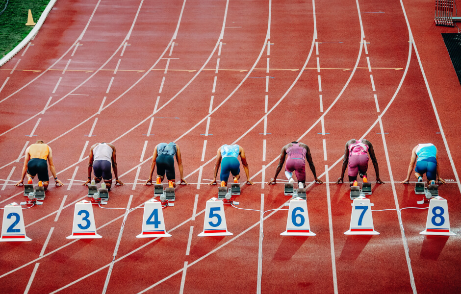

Atletismo é o conjunto de esportes formado por três modalidades: corrida, lançamentos e saltos. O atletismo nasceu na Grécia, onde foram criados os estádios para realização das corridas a pé. Foi na Grécia também que houve o primeiro registro de uma competição de atletismo, durante as Olimpíadas realizadas em 776 a.C.. O aquecimento para atletismo é crucial para prevenir lesões, melhorar o desempenho e preparar o corpo para os esforços. Ele envolve movimentos dinâmicos, exercícios de mobilidade e exercícios de ativação muscular.
As modalidades de corrida no atletismo podem ser divididas em provas rasas, com barreiras, com obstáculos e de revezamento. As provas rasas incluem distâncias como 100m, 200m e 400m. As provas com barreiras e obstáculos incluem 110m/400m com barreiras e 3000m com obstáculos, respectivamente. As provas de revezamento, como 4x100m e 4x400m, envolvem equipes de atletas que revezam um bastão.
No atletismo, é crucial cuidar do corpo antes, durante e após os treinos e competições. Isso
inclui um planejamento adequado, aquecimento e alongamento corretos, hidratação, alimentação equilibrada, uso de
equipamentos adequados, descanso e recuperação.
